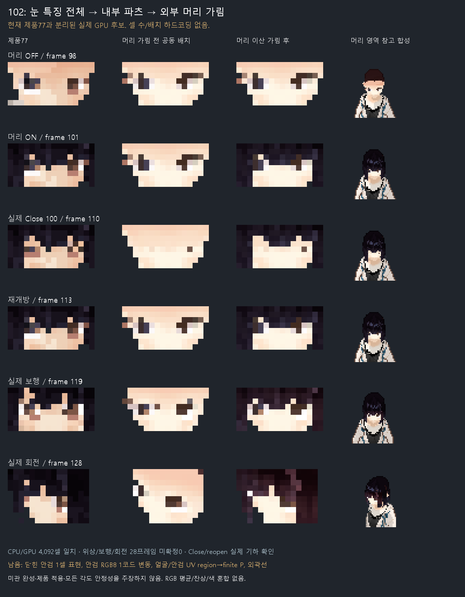
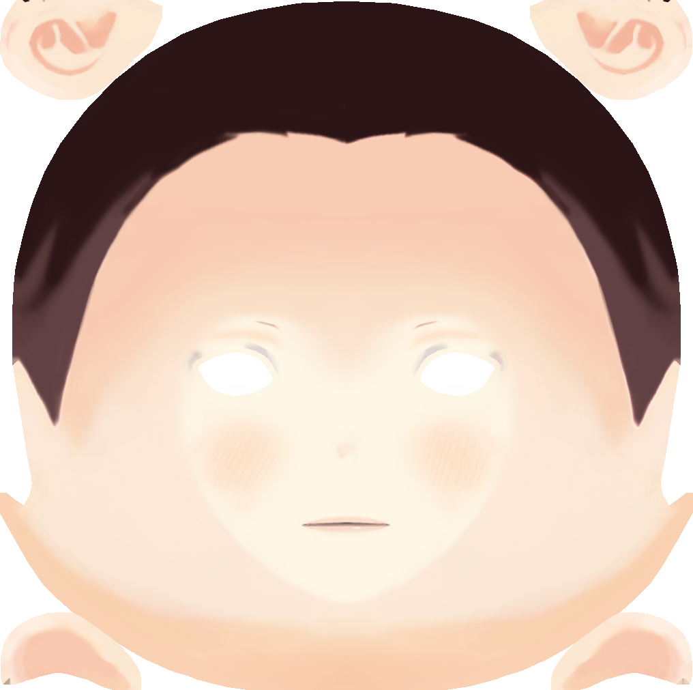
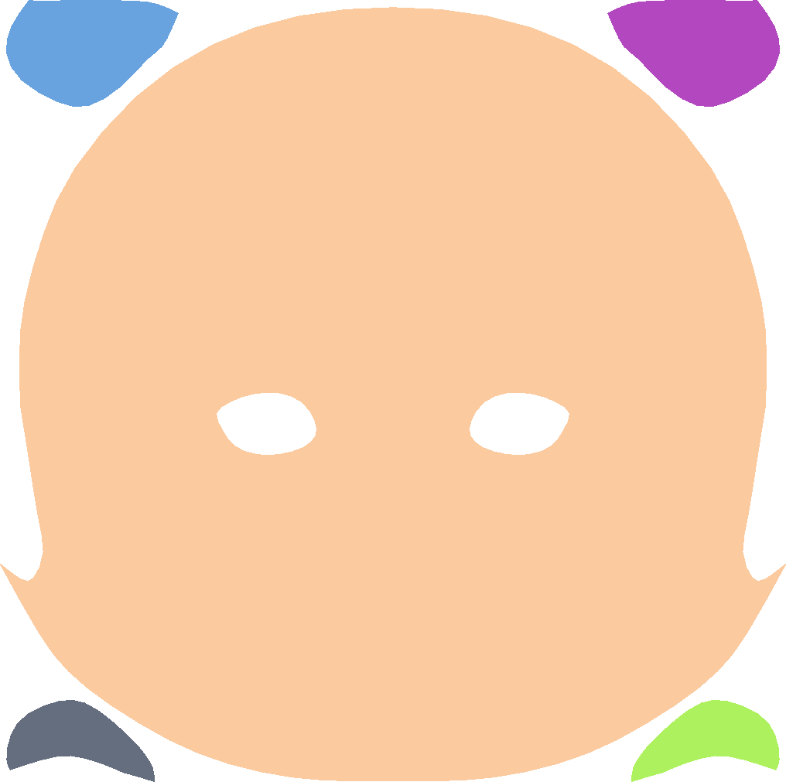

제품77은 유지했다. 격리 GPU 경로는 이전295/348/98의 완성 RGB나 world backing을 읽지 않는다. source-local native/authored eye와 현재 변형 피부를 먼저 공동 선택하고 머리의 실제 depth/coverage는 후단에 한 색으로 선택한다. RGB lerp/시간 평균/고정 눈 픽셀 예산은 없다.

실제 움직임 (느리게) · 머리 OFF/ON·Close/reopen9상태 · 움직임28프레임 · 동결 GPU 입력 CPU4092셀 재검산 · 원시 버퍼와 marker
실제 실패 입력은 iris2+white7+canvas7이다. 이전 선택은 각 part를 canvas와 따로 경쟁시켜 미확정 처리했다. union eye9가 canvas7보다 크므로 부모 특징을 먼저 선택해야 한다. 새 Select는 feature union→child coverage→유일한 actual source depth 순서다. 같은 coverage와 source depth까지 같은 경우는 여전히 미확정으로 남긴다. exact .5는 foreground 포함이며 최소 셀 예산이 아니다. frame-order witness는 판단에 쓰지 않는다.
수정 후28프레임 미확정0,4092셀 CPU/GPU 불일치0. 위상10상태 identity1종, 측정 이동.99998474px 및 원점 복귀0. 홍채·흰자는 원본 bank palette 밖0. Native 안검은 phase frame104에서 RGB[118,94,81]→[118,93,81]1코드 변동이 남는다. geometry 안정성을 colour/전체시간 안정화로 확대하지 않는다. 완전Close iris/sclera0, 재개방 원복이나 닫힌 안검은1셀만 남아 읽히는 눈매 완성은 아니다.
원본 얼굴 재질UV 도메인866160texel/11638RGB8을64 affine-jump 방식으로 검사했다. coarse5 중 main798508texel은 피부와 진한 두피를 같은 region으로 합친다. 같은 region RGB[42,20,21]과[254,248,231], OKLab L.223~.979. 원본 경계는 AA된 연속 전이여서 strict jump 근거가 없다. fine1368로 대신하면 과분절된다. native lid도 coarse28/fine2176이며 fine을 미술 특징으로 확정하지 않았다.
정확한 source/hash/UV · 같은region 대조 좌표


이 실패 map으로 P를 만들면 다시 피부·두피가 같은색으로 붕괴하므로 적용하지 않았다. 다음 resolver에는 finite-width AA colour transition과 지속 gradient/얇은 painted feature의 구별 및 source hierarchy가 필요하다. native skin·lid 전체 P/outline 경로는 미완이다. 사용자6+2 평가는 참고이며 force/template target으로 추가하지 않았다. source bank의 기준각과 사용자 표현이 일치한다고 단정하지 않았다.
보존: 최종Edit,dirty31,입력 동일 객체22값·장치/옵션/time/pipeline/globals/사용자30변경·보호32파일. RT30→30. 초기47snapshot의 임시 ProjectSettings importer는 수명 종료 후 unavailable였고, 후기 baseline46은46exact. 실제 PlayerSettings는 계속 exact. 삭제/reset/저장/CUA/force kill/push없음. 원배율/nearest PNG를 직접 검수했다. 미관완성·제품통합·모델100%범용성은 주장하지 않는다.